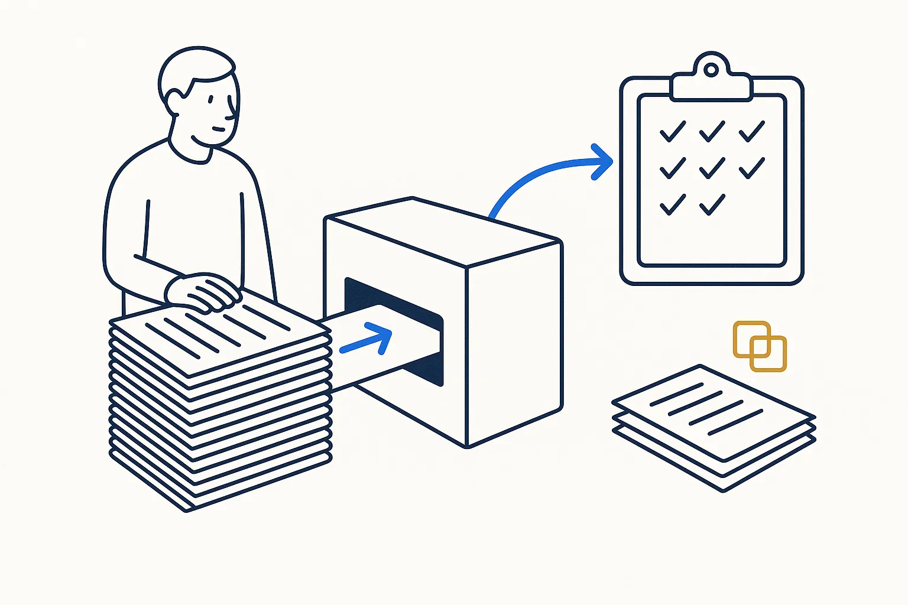

Build Your Own Pipelines
One import that runs by itself: export, clean, load, and the same result every time.
Duration: half a day · Builds on: Sources
At the Sources level you brought one source home by hand. A pipeline does that trip for you, every week, in the same way. Pipelines move data. Doing work with it, such as sending a summary or a reminder, is the next level: Automations.
You leave with
- One pipeline for one source: it reads the export, cleans dates, amounts and names, and loads the result into DuckDB.
- A pipeline you can run twice with the same result: no duplicate rows, no lost rows.
- The raw export kept as it arrived, so the whole database can be rebuilt from the files at any time.
- One command to run it, and a short note in your Memory that says what it reads, what it writes and when it last ran.
Ideas to try
- A bike shop loads its weekly sales export and its supplier price list into one table, and sees the margin per model.
- An electrician pulls the hours from the time-tracking app every Friday and matches them to the jobs.
- A dental practice loads the appointment export and counts no-shows per weekday, without retyping anything.
- A guesthouse combines the booking platforms' exports into one list of stays, with one row per guest night.
- A one-person designer loads the bank export every month and tags each payment to a client.
Your turn
Which export do you open, clean and copy by hand every month? That is your first pipeline.
What we do in the session
- 30 min — Walk the path by hand once: where the export comes from, what you clean, where it should land.
- 60 min — Build the pipeline with the AI: read the file, fix dates and amounts, write the rows into DuckDB.
- 30 min — Run it twice and count the rows. If the count changes, find out why before you go on.
- 30 min — Add a second export, such as the next month, and check that only the new rows arrive.
- 30 min — Wrap it in one command and write the note: what it reads, what it writes, when it ran.
What you bring
- Two or three exports of the same source from different weeks or months, so we can test that it repeats.
- One row you know is wrong in that export, such as a typo, a missing date or a double entry.
Tools
Claude Code to write the pipeline; Python; DuckDB (free) as the database. Optional: a spreadsheet to look at the result, and the source list you made at the Sources level.
Example from my own system
The exports of every bank and card I use land in one database through one small importer: 14,624 transactions since 2002, from 32 accounts, all in the same shape no matter which bank they came from. The export files are kept. When I change a rule or find a bug, I rebuild the database from the files instead of patching it. See A household and business ledger you own.
Pitfalls
- A pipeline that only works once. If the second run doubles your rows, it is a script, not a pipeline. Run it twice on the day you build it.
- Throwing away the raw file. Cleaned data you cannot rebuild is a dead end. Keep what arrived, and load from it.
- Trusting the exit code. "Finished without errors" says nothing about what arrived. Count the rows in and the rows out. A third of the files in one of my imports turned out to be duplicates (Document intake that keeps its own receipts).
Works best after
Build Your Own Sources (level 3). A pipeline needs a source with an owner and an export you can get every time.
Concepts behind it
- Deterministic by Design — Deliberate is whether the structure was chosen; deterministic is whether the output repeats. A toy is neither on the second try.
- Decompose and Compose — Break the complex whole into small, self-contained parts you can name, model and check one at a time — the core move of thinking in structures.
- Fail Fast — Set experiments up to fail quickly and cheaply, read the signal honestly, and move on — don't linger in something that, in the end, may not work.
- One-Way Publishing — You don't sync systems — you publish from one. Sync is where rot starts.
Use cases
 A household and business ledger you ownBank exports from several banks and a credit card land in one database, every row tagged personal or business and categorised by readable rules. The finance app becomes a view, not a vault.
A household and business ledger you ownBank exports from several banks and a credit card land in one database, every row tagged personal or business and categorised by readable rules. The finance app becomes a view, not a vault.
Document intake that keeps its own receiptsFeeding thousands of documents into a document system, with a ledger that proves what arrived, avoids duplicates, and re-reads the badly recognised ones.Resources
- DuckDB — A database in a single file, no server. Ideal as a rebuildable mirror of files you own.
- The Pragmatic Programmer (20th anniversary edition) — Tracer bullets, small steps, don't repeat yourself. Written for programmers, and more relevant now that the AI is the one typing.